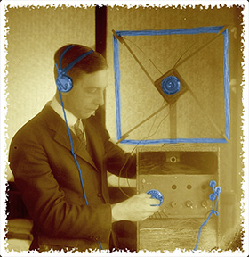
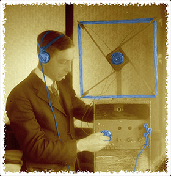

Bienvenue sur Cuiteur
Qu'est ce que Cuiteur ?

Cuiteur est une application de microblogage qui permet à ses utilisateurs de produire des messages courts (des blablas), qui sont accessibles à une liste de contacts personnels (des abonnés). Vous choisissez les membres dont vous souhaitez recevoir les messages et à l'inverse d'autres utilisateurs s'inscriront à vos mises à jour et les recevront en temps réel.
Cuiteur dispose d'une importante communauté virtuelle qui permet de se créer facilement un réseau en ligne.
En bref, Cuiteur permet à n'importe qui de dire n'importe quoi à n'importe qui d'autre.
Que peut-on faire avec Cuiteur ?
Cuiteur vous permet de publier des blablas (messages courts limités à 200 caractères,qui seront lus par les personnes qui vous suivent (vos abonnés).
Cuiteur vous permet de vous abonner à d'autres utilisateurs pour lire les blablas) qu'ils publient. Vous disposez d'un moteur de recherche pour trouver et sélectionner les personnes qui vous intéresse.

 



Cuiteur vous permet de répondre personnellement à un blabla et également de recuiter un blabla : un message de vos abonnements est retransmis à vos abonnés.
Les blablas peuvent être marqués avec des "tags". Ce sont des mots dans les messages qui permettent de faire des recherches sur un sujet précis et de définir les tendances des discussions à un moment donné.
Cuiteur, respect et protection de votre vie privée

Informations personnelles
Les informations personnelles recueillies par Cuiteur et susceptibles d'être mises à disposition du réseau concernent votre nom, votre date de naissance, votre site web personnel et une mini-biographie que vous pouvez renseigner si vous le désirez.
Données personnelles
Cuiteur n'utilise pas les informations fournies par ses utilisateurs pour introduire des publicités adaptées à leur profil. Cuiteur ne vend pas ces informations à des entreprises privées ou publiques, ou à des organismes grouvernementaux.
Tout le monde peut lire vos blablas
Vos blablas sont publics et peuvent être consultés par n'importe quel autre utilisateur. L'abonnement et le désabonnement d'une personne à une autre est libre et ne donne lieu à aucune validation d'un côté ou d'un autre.
Toutes les publications faites sur Cuiteur sont de la responsabilité de la personne qui en est l'auteur. Avant toute publication de textes ou de lien, il vous appartient en tant qu'auteur de vous assurer que ceux-ci n'enfreignent pas les lois se votre pays de résidence.
Les moyens techniques de Cuiteur
Cuiteur dispose de moyens techniques exceptionnels qui permettent les temps de réponse les plus rapide du Web. Nos Data Center sont situées sur 4 continents et peuvent prendre en compte des millions de connexions simultannées. Tous les développements d'applications sont donc conçus pour être tolérants aux pannes.

Data Center Etats-Unis

Data Center Asie

Data Center Europe

Serveur de mail
Pour stocker les données et répondre aux requêtes, Cuiteur a choisi des très gros serveurs. Les bases de données ont été spécialement étudiées et structurées pour offrir les meilleures performances, quelques soient les conditions d'utilisation et de trafic.
Requète multicritéres

Tri de données
Plus d'hésitation, à votre clavier !

Vous voulez communiquer, informer, chercher, ajouter du bruit à la cacophonie ambiante, alors Cuiteur est fait pour vous !
N'attendez plus pour vous inscrire !